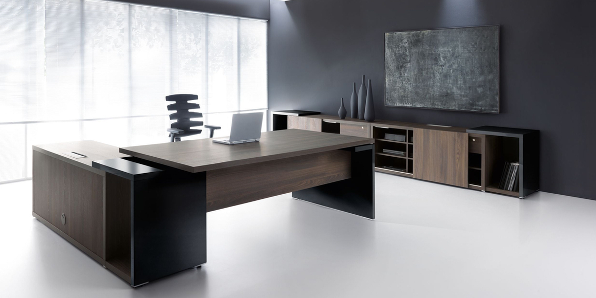
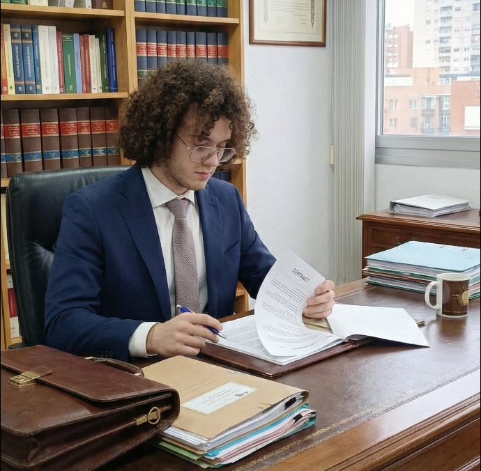

Nuestra Historia
Fundado en 2005 por los letrados Antonio Calvo y Aarón García, nuestro despacho nació con una vocación clara: acercar la justicia a las personas. Lo que comenzó como un pequeño bufete familiar se ha convertido, dos décadas después, en un referente de la abogacía en nuestra ciudad.
Creemos en el derecho preventivo y en la resolución extrajudicial de conflictos siempre que sea posible, pero defendemos con firmeza los intereses de nuestros clientes en los tribunales cuando la situación lo requiere.

Nuestros Valores
Honestidad
Transparencia total en la viabilidad de su caso y en nuestros honorarios.
Excelencia
Formación continua y estudio riguroso de cada asunto encomendado.
Compromiso
Acompañamos al cliente en todo el proceso, brindando apoyo legal y humano.
El Equipo

Antonio Calvo
Socio Director - Área Penal
Licenciado en Derecho por la Universidad Jaume I. Máster en Derecho Penal Económico.
Aarón García
Socio Director - Área Civil
Especialista en Derecho de Familia y Sucesiones. Mediador titulado.
Julio Morales
Abogado Senior - Laboral
Experto en negociación colectiva y defensa de derechos de los trabajadores.